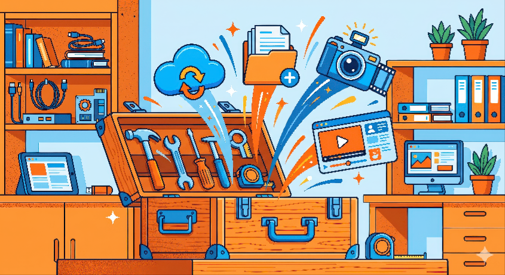

Texto
CAJA DE HERRAMIENTAS DIGITALES
Para evitar distracciones en el navegador y trabajar en entornos de red seguros y controlados, utilizaremos las siguientes plataformas de curación de contenidos:
Para el Alumnado: Tablero de Symbaloo
Un entorno visual cerrado basado en iconos grandes que recopila accesos directos a bancos de imágenes accesibles, diccionarios de pictogramas y la plantilla de trabajo.
Enlace de acceso: Tablero Abierto de Symbaloo para PTVAL
Para el Docente y Apoyos: Colección Wakelet
Espacio técnico de uso diario donde se almacena el repositorio de recursos sobre robótica educativa, adaptaciones curriculares y pautas DUA para coordinar el aula-taller con el monitor de apoyo.
Enlace de acceso: Espacio de Gestión Docente en Wakelet
